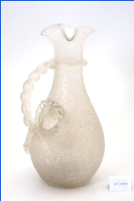

MS-2969: ফুলদানি

ফুলদানি অথবা কলসিতে একটি ক্লাসিক ট্রাইফয়েল আকৃতি রয়েছে, ঢালার জন্য একটি ট্রেফয়েল রিম, একটি আলংকারিক হাতে ব্যবহার করা বাঁকানো দড়ির হ্যান্ডেল সহ। সেই জটিল প্রক্রিয়াটিই গ্লাসটিকে তার অনন্য, সুন্দর এবং স্পর্শ কাতর ফিনিস দেয় যা এটিকে সংগ্রাহকদের মধ্যে প্রিয় করে তুলেছে। এই ধরনের কলসিতে প্রায়ই একটি অন্তর্নির্মিত অভ্যন্তরীণ আইস ব্লাডার থাকে যেখানে তরলকে পাতলা না করে ঠান্ডা করার জন্য বরফ রাখা যেতে পারে।
MS-2969: फूलदान
यह फूलदान/सुराही पारंपरिक नाशपाती के आकार की है। इसमें उंडेलने के लिए तीन-पंखुड़ी वाला (त्रिफलक/तीन-ओंठ वाला) किनारा तथा सजावटी, हाथ से लगाए गए घुमावदार रस्सीनुमा हत्थे का प्रयोग किया गया है। काँच को हाथ से इस प्रकार जटिल एवं कलात्मक ढंग से तैयार करने की प्रक्रिया ही इसे इसकी विशिष्ट, सुंदर और स्पर्शनीय बनावट प्रदान करती है, जिसके कारण यह संग्रहकर्ताओं के बीच विशेष रूप से लोकप्रिय रही है। इस प्रकार की सुराही में अक्सर एक अंतर्निहित आंतरिक डिब्बा या "आइस ब्लैडर" (बरफ़ की थैली/खांचा) होता है, जहाँ तरल पदार्थ को बिना पतला किए (पानी मिलाए बिना) ठंडा करने के लिए बर्फ रखी जा सकती थी।
MS-2969: പൂച്ചട്ടി
ഈ പാത്രത്തിന്ക്ലാസിക്പീയർ ആകൃതിയുണ്ട്. പാനീയംപകരാനായിമൂന്ന്ചുണ്ടുകളുള്ള (ട്രെഫോയിൽ) വക്കുമുണ്ട്. കൂടാതെഅലങ്കാരത്തിനായികൈകൊണ്ട്നിർമ്മിച്ചപിരിച്ചകയറിന്റെരൂപത്തിലുള്ളഒരുപിടികൂടിയുണ്ട്. ഈ സങ്കീർണ്ണമായനിർമ്മാണരീതിയാണ്ഗ്ലാസിന്അതിന്റേതായസവിശേഷവുംമനോഹരവുമായരൂപംനൽകുന്നത്. അതുകൊണ്ടുതന്നെഇത്ശേഖരങ്ങളാക്കിവെക്കുന്നവരുടെഇടയിൽ വളരെപ്രിയപ്പെട്ടഒന്നായിമാറിയിരിക്കുന്നു. ഇത്തരത്തിലുള്ളജഗ്ഗുകളിൽ സാധാരണയായിഐസ്വെക്കാനായിഒരുആന്തരികഅറയോസംവിധാനമോഉണ്ടാകും. ഇതിൽ ഐസ്വെച്ച്പാനീയത്തിന്വെള്ളംചേർത്ത്നേർത്തുപോകാതെതണുപ്പിച്ച്സൂക്ഷിക്കാൻ സാധിക്കും.
MS-2969: குவளை
இந்தக் குவளை அல்லது திரவம் ஊற்றும் பாத்திரம், பாரம்பரியப் பேரிக்காய் வடிவத்தைக் கொண்டுள்ளது. இதில் பானங்களை ஊற்றுவதற்கு ஏதுவாக மூன்று இதழ்கள் கொண்ட விளிம்பும், கையால் செய்யப்பட்ட வேலைப்பாடுகள் நிறைந்த திருகு கயிறு போன்ற பிடிமானமும் அமைக்கப்பட்டுள்ளது.இத்தகைய நுணுக்கமான கைவினைச் செயல்முறையே கண்ணாடிக்கு தனித்துவமான, அழகிய மற்றும் தொடு உணர்வைத் தரும் மேற்பரப்புத் தோற்றத்தை உருவாக்குகிறது. இதன் காரணமாக, இவ்வகைப் பொருட்கள் சேகரிப்பாளர்களிடையே விரும்பத்தக்கவையாக உள்ளன.மேலும், இவ்வகை கூசாக்களில் பானத்தின் சுவையைக் குறைக்காமல் குளிர்விப்பதற்காக, பனிக்கட்டிகளை வைப்பதற்கு என்று உள்ளமைக்கப்பட்ட "ஐஸ் பிளேடர்"என்ற தனிப் பகுதியும் இடம்பெற்றிருப்பது இதன் சிறப்பம்சமாகும்.
MS-2969: పూల కుండీ
జాడీ/పిచర్ లేదా ద్రవాలు పోసే పాత్రఒకక్లాసిక్బేరి పండు ఆకారాన్నికలిగిఉంటుంది, పోయడానికిట్రెఫాయిల్ (మూడు-ముడుచుకున్న) రిమ్, అలంకారమైన, చేతితోఅప్లైచేసినవక్రీకృతతాడుహ్యాండిల్తోఉంటుంది. ఆక్లిష్టమైనప్రక్రియగాజుకుదానిప్రత్యేకమైన, అందమైనమరియుస్పర్శముగింపునుఇస్తుంది, ఇదిసేకరించే వారిలో ఇదిచాలా ప్రాచుర్యం పొందింది. ఈరకమైనపిచర్తరచుగాఅంతర్నిర్మితఅంతర్గతకంపార్ట్మెంట్లేదా "ఐస్బ్లాడర్" నుకలిగిఉంటుంది, ఇక్కడద్రవాన్నిపలుచనచేయకుండాచల్లబరచడానికిమంచునుఉంచవచ్చు.
MS-2969: گلدان
گلدستے یا گھڑے کی یہ شے اپنی کلاسیکی ناشپاتی نما ساخت کے باعث خاص دلکشی رکھتی ہے۔ اس کے دہانے پر تین پتیوں جیسا کنارا ہے، جبکہ ہاتھ سے لگائی گئی مڑی ہوئی رسی نما گرفت اس کی آرائشی خوب صورتی کو مزید نمایاں کرتی ہے۔ شیشے کو اس پیچیدہ طریقۂ ساخت سے ایک منفرد، نفیس اور لمس میں خوش گوار سطح حاصل ہوتی ہے، جس نے اسے جمع کرنے والوں میں خاص مقبولیت دلائی ہے۔ ایسے گھڑوں میں عموماً ایک اندرونی خانہ، جسے "آئس بلیڈر" کہا جاتا ہے، بھی ہوتا ہے۔ اس میں برف رکھ کر مشروب کو بغیر پتلا کیے ٹھنڈا رکھا جا سکتا ہے۔